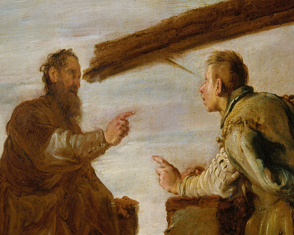

The Sermon On The Mount: Judge Not
Judge not, that ye be not judged.
For with what judgment ye judge, ye shall be judged: and with what measure ye mete, it shall be measured to you again.
And why beholdest thou the mote that is in thy brother's eye, but considerest not the beam that is in thine own eye?
Or how wilt thou say to thy brother, Let me pull out the mote out of thine eye; and, behold, a beam is in thine own eye?
Thou hypocrite, first cast out the beam out of thine own eye; and then shalt thou see clearly to cast out the mote out of thy brother's eye.
Matthew 7:1-5
- 